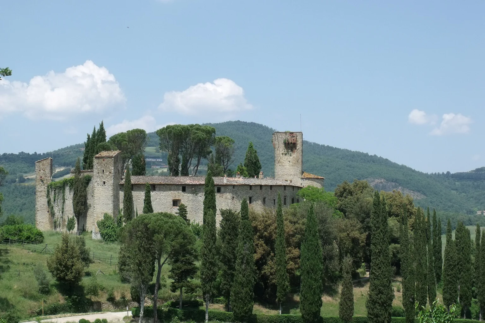

Umbria, Italy
Choose the castle for an estate stay that makes horses, countryside and the Bathhouse part of the day.
Umbria, Italy
A restored castle at Reschio, estate trails and a Bathhouse beneath the old walls.
Your preferences. Thoughtful options. Personal attention throughout.

Umbria, Italy
Choose the castle for an estate stay that makes horses, countryside and the Bathhouse part of the day.
A few considered examples. Your personal selection extends beyond these pages, with stays and privileges chosen around your preferences.
Lisciano Niccone, Perugia, Umbria, Italy
A restored castle and its working estate make the Umbrian borderlands a place to inhabit, rather than tour at speed.
Who it suits
Design-minded couples, riders and guests who want a slower countryside stay.
Begin with a walk across the estate before the day grows warm, or reserve a riding session matched to your experience. Lunch need not become a drive: the estate’s restaurants offer different settings, from the castle to the former stables. Later, trade the landscape for the Bathhouse and the quiet of its old cellars. Return to your room with time to change before dinner. A visit to a nearby town can shape another day, while this one remains about the pleasure of staying in one place.
Getting there & getting around
Road arrival into rural Umbria; match the airport and onward route to the whole itinerary.
Before choosing
Riding, treatments and private spaces require their own reservations. A car or driver is useful beyond the estate.
A different choice
An estate house offers a different group-stay format; confirm the particular house and its services separately.
Details checked · 26 Oct 2026
| Property / setting | Style / suggested fit | Main reason to choose it | Accommodation | Facilities | Access / transport | Season / practical considerations |
|---|---|---|---|---|---|---|
| Hotel Castello di Reschio Lisciano Niccone, Perugia, Umbria, Italy | Castle & country estate | A restored castle and its working estate make the Umbrian borderlands a place to inhabit, rather than tour at speed. | Rooms and suites; the layout and outlook are confirmed for the chosen category. | The hotel occupies an eleventh-century castle on the Umbria–Tuscany border. | Road arrival into rural Umbria; match the airport and onward route to the whole itinerary. | Riding, treatments and private spaces require their own reservations. A car or driver is useful beyond the estate. |
Browse Hotels & Private Stays ↗ · Private villas & group stays ↗
A selection to inspire your next evening. In every destination, we shape a shortlist around you, with further tables, experiences and privileges shared personally with our clients. Tell us your taste; your time is ours to look after.
Explore by cuisine & occasion ↗
One reservation or every evening of your stay. A wider world of possibilities, shared personally and arranged around you.
Tell us when you will be here. We will share occasions and experiences to shape your time around.
Browse Events & Experiences ↗Walk the estate in the morning, leaving a riding lesson or guided activity for a time that suits the group. Lunch and the Bathhouse can be enough for the rest of the afternoon.
A day beyond the estate is a separate possibility, with a driver and a restrained route. Return to the castle for dinner, or choose the more informal stable setting when it is operating.
Our attention continues beyond the reservation. Contact us 24/7 during your stay, including for a change of plan or a spontaneous idea. We explore suitable options and confirm the arrangements you choose.
Tell us which place or property appeals. Approximate dates and an idea are enough to begin.
Begin an EnquiryContact us 24/7. Our team will respond personally; email info@zelrocprive.com whenever it suits you.
A little inspiration—or something already in mind?